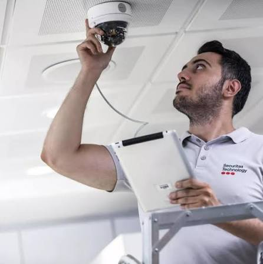
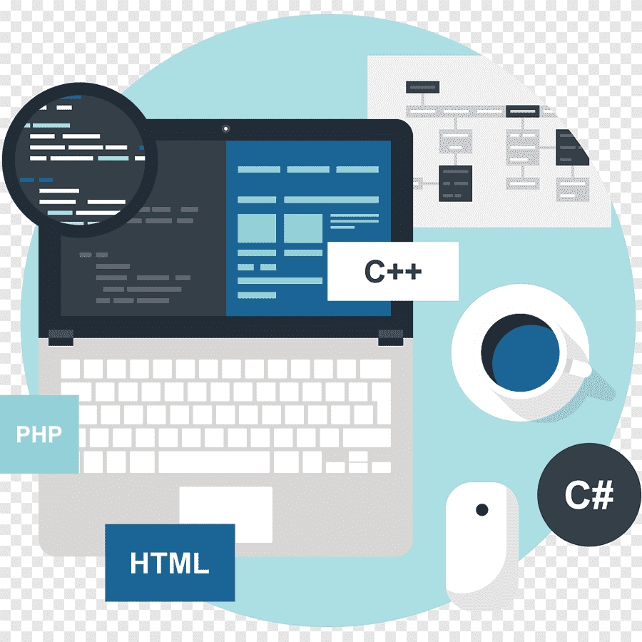
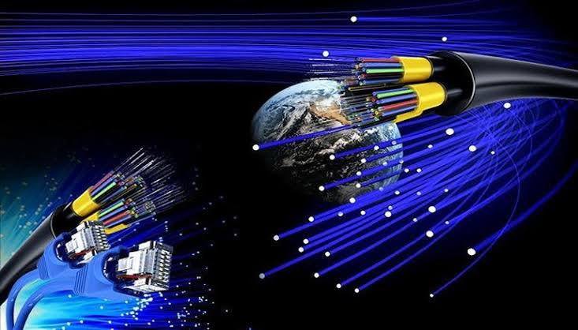
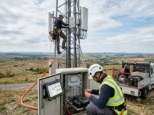

1️⃣ Administrateur Systèmes & Réseaux
Celui qui fait fonctionner les entreprises. Serveurs, réseaux, sécurité, cloud. Sans lui, tout s’arrête.L'administrateur système et réseau conçoit, déploie, sécurise et maintient les infrastructures informatiques d'une entreprise. Il gère les serveurs, le réseau (routeurs, commutateurs) et veille à la disponibilité des services, à la sauvegarde des données et à la protection contre les cybermenaces pour garantir une activité continue.
Pour en savoir plus sur les missions, les compétences requises et les opportunités de formation, vous pouvez consulter la Fiche métier : Administrateur Systèmes et Réseaux. Si vous cherchez à vous former ou à vous perfectionner, découvrez le parcours Administrateur systèmes, réseaux et cybersécurité.
2️⃣ Expert Cybersécurité
Les attaques augmentent, la demande explose. Protéger les données est devenu vital pour les entreprises.Un expert en cybersécurité protège les systèmes informatiques, réseaux et données des entreprises contre les cyberattaques. Son rôle consiste à identifier les vulnérabilités, installer des pare-feu, chiffrer les données, mener des audits de sécurité et gérer les incidents.

Formations et Compétences.
Pour devenir expert en cybersécurité, un diplôme de niveau Bac+5 est généralement requis (master ou diplôme d'ingénieur en sécurité des systèmes d'information).Les compétences techniques clés incluent : La maîtrise des réseaux TCP/IP et des systèmes d'exploitation (Windows, Linux, Mac OS). La sécurité dans le cloud. Le hacking éthique et la cryptographie. Des certifications reconnues telles que CISSP, CISM ou CISA sont souvent exigées par les grandes entreprises et les institutions financières.
Rôles et Évolution:
L'expert en sécurité informatique peut travailler en interne au sein d'une entreprise ou intervenir en tant que consultant pour une ESN (Entreprise de Services du Numérique). Les postes les plus courants incluent : Pentester (ou hacker éthique) : teste la robustesse des systèmes en simulant des attaques. Architecte en cybersécurité : conçoit les infrastructures sécurisées de l'entreprise. Analyste SOC : surveille les menaces en temps réel.Le salaire varie généralement entre 3 333 € et 7 500 € brut par mois en fonction de l'expérience et des responsabilités.
3️⃣ Spécialiste Vidéosurveillance & Sécurité électronique (CCTV)
Villes, entreprises, maisons. La sécurité physique devient aussi technologique.
Un Expert en vidéosurveillance et sécurité électronique, conçois et déploie des systèmes de protection sur mesure (caméras IP/analogiques, alarmes, contrôle d'accès) pour sécuriser des locaux ou domiciles. Son objectif est de garantir une surveillance fiable, accessible à distance et conforme à nos besoins.Pour une solution performante, il interviens sur les aspects suivants :
Audit et dimensionnement
Analyse des zones à risques et choix du matériel adapté (caméras thermiques, motorisées PTZ ou vision nocturne).Intégration technologique
Déploiement de réseaux de caméras connectées (IP, PoE, Wi-Fi) et configuration des enregistreurs (NVR/DVR) pour le contrôle à distance via smartphone ou PC.Contrôle d'accès et alarmes
Installation de systèmes anti-intrusion, de badges biométriques ou d'interphones pour filtrer les entrées et sécuriser les périmètres sensibles.Maintenance et dépannage

Vérification du parc installé, mise à jour des équipements et résolution des pannes pour assurer une disponibilité continue du système.
4️⃣ Ingénieur Cloud (AWS, Azure, Google Cloud)
Les serveurs ne sont plus dans les bureaux. Ils sont dans le cloud. Et les experts sont très recherchés.L'ingénieur cloud : est le chef d'orchestre de l'infrastructure informatique dématérialisée d'une entreprise.
Il conçoit, déploie et sécurise des environnements virtuels (serveurs, stockage, réseaux) sur des plateformes comme AWS, Azure ou GCP.
Il garantit la scalabilité, la haute disponibilité et l'optimisation des coûts des applications de l'entreprise.
Missions Principales
Architecture & Déploiement
Conception de solutions sur-mesure (IaaS, PaaS, SaaS) adaptées aux besoins techniques.Automatisation (DevOps)
Utilisation d'outils d'infrastructure as code (IaC) pour industrialiser les déploiements.Sécurité & Conformité :
Mise en place de protocoles de sécurité stricts, gestion des accès et chiffrement des données.
Monitoring & Optimisation
Surveillance des performances et réduction des coûts liés aux ressources consommées.Compétences & Formations
Diplôme : Généralement un niveau Bac+5 (Master ou diplôme d'école d'ingénieur en informatique, réseaux ou cloud).Plateformes maîtrisées
AWS (Amazon Web Services), Microsoft Azure, Google Cloud Platform (GCP).Outils & Langages
Maîtrise des conteneurs (Docker, Kubernetes), scripts (Python, Bash) et outils d'automatisation (Terraform, Ansible).Salaires & Perspectives
Le salaire varie selon l'expérience et la situation géographique.En Europe, par exemple, un profil junior peut prétendre à une rémunération entre 35 000€ et 45 000€ bruts annuels, tandis qu'un ingénieur confirmé peut dépasser les 70 000€.
Pour explorer les opportunités d'emploi ou des cursus de formation, vous pouvez consulter les offres sur Indeed ou les descriptions de métiers de l'Onisep.
5️⃣ Développeur Web / Logiciel
Sites, applications, plateformes. Tout passe par le code aujourd’hui.Un développeur web et logiciel est un expert en informatique qui conçoit, code, teste et maintient des applications.
Le développeur web se spécialise dans les sites et applications accessibles via un navigateur, tandis que le développeur de logiciel crée des programmes plus larges installés sur des systèmes spécifiques (PC, mobile). Ces deux métiers reposent sur des compétences complémentaires mais s'orientent vers des technologies distinctes :
Ces deux métiers reposent sur des compétences complémentaires mais s'orientent vers des technologies distinctes :
Développement Web : Divisé en Front-end (l'interface utilisateur visible avec HTML, CSS, JavaScript) et Back-end (la gestion des bases de données et serveurs avec PHP, Python, ou Node.js).

Développement Logiciel : Se concentre sur l'architecture système et les applications natives ou de bureau. Les langages utilisés incluent C, C++, Java, C# ou Python.
De nombreux professionnels travaillent en tant que "Full-Stack" en maîtrisant plusieurs de ces facettes.
6️⃣ Spécialiste en Intelligence Artificielle & Automatisation
L’IA ne remplace pas l’homme. Elle remplace ceux qui ne savent pas l’utiliser.Un spécialiste en intelligence artificielle et automatisation conçoit, intègre et optimise des flux de travail (workflows) intelligents. En combinant l'IA générative (comme GPT ou Claude) et des outils d'orchestration (Make, Zapier, n8n), il transforme les processus répétitifs en systèmes autonomes pour maximiser la productivité de votre entreprise.
Ce que fait l'expert pour votre entreprise
Automatisation des tâches:Création d'agents IA pour rédiger des devis, traiter des e-mails ou alimenter automatiquement vos bases de données. Intégration de chatbots : Mise en place d'assistants intelligents pour le support client ou la qualification de prospects. Analyse et Audit : Identification des goulots d'étranglement dans vos processus quotidiens pour concevoir des solutions sur-mesure. Les outils métiers les plus utilisés Orchestration : Make, Zapier, n8n. Modèles d'IA : OpenAI, Anthropic. Gestion et centralisation : Airtable, Notion. L'intégration de ces technologies permet de réduire les erreurs opérationnelles et de réaliser des gains de temps considérables.
7️⃣ Data Analyset / Data Scientiste
Les données sont le nouveau pétrole. Savoir les analyser, c’est savoir décider.Le Data Analyste: traduit les données passées en rapports et tableaux de bord compréhensibles pour orienter les décisions stratégiques (analyse descriptive).
Le Data Scientiste se tourne vers l'avenir en concevant des modèles mathématiques et des algorithmes de machine learning pour anticiper les comportements et automatiser des processus (analyse prédictive). Caractéristique Data Analyste Data Scientiste Objectif principal Expliquer le passé et optimiser les décisions actuelles, Prédire l'avenir et automatiser (IA, prévisions)Compétences clésSQL, Excel, Power BI, Tableau, statistiques descriptives, Python, R, Machine Learning, Deep Learning, mathématiques avancées, Salaire de départ (Europe)~35 000 € à 40 000 € brut / an~45 000 € à 50 000 € brut / an
Pour explorer ou comparer plus en détail ces deux voies, vous pouvez consulter les fiches métiers spécialisées : Renseignez-vous sur le rôle et la formation du Data Scientiste sur l'APEC. Explorez les compétences et les débouchés du Data Analyste via Studyrama.
8️⃣ Technicien Réseaux Télécoms & Fibre Optique
Internet rapide est demandé aujourd'hui partout. Un métier technique, concret et très demandé.Un technicien réseaux télécoms et fibre optique: déploie, raccorde et maintient les infrastructures internet et téléphoniques. Il intervient aussi bien sur les câblages souterrains et aériens que chez les clients pour installer et dépanner les équipements. Ce métier de terrain exige minutie, habilité et maîtrise des outils de mesure. Le métier se structure principalement autour de deux axes d'intervention :

1. Les missions principales
Déploiement et raccordement : Tirage de câbles (aériens ou souterrains), soudure par fusion des fibres optiques, et câblage des répartiteurs.Tests et mesures : Utilisation du réflectomètre optique (OTDR) pour vérifier l'atténuation et l'intégrité du signal.Maintenance et SAV : Localisation des pannes (coupures, atténuations) sur le réseau FTTH (Fiber to the Home) ou FTTE (Fiber to the Enterprise) et remplacement des pièces défectueuses.

2.Formations et compétences Parcours : Accessible via des diplômes allant du BAC Pro (Systèmes numériques) au BTS/DUT (Réseaux et Télécommunications). Il existe également des formations courtes et certifiantes (3 à 6 mois) très prisées pour ce métier en forte tension.
Habilitations : Travaux en hauteur (nacelles, échelles), habilitations électriques, et permis de conduire (Permis B) indispensable. Des certifications et référentiels officiels de compétences sont disponibles pour évaluer ou faire reconnaître ce métier auprès d'institutions comme France Compétences ou via des organismes spécialisés comme Objectif Fibre.9️⃣ Consultant IT / Freelance Tech
Résoudre les problèmes des entreprises et être payé pour son expertise. Liberté + valeur.
Un consultant en technologies de l'information (TI) : est un professionnel qui conseille les organisations sur la manière d'aligner leur infrastructure technologique sur leurs objectifs commerciaux
Ils évaluent les systèmes existants, recommandent du matériel ou des logiciels, supervisent la mise en œuvre de nouveaux outils et optimisent la sécurité des données et la cybersécurité.Principales responsabilités
Évaluation des besoins Évaluation de l'environnement informatique existant d'une entreprise et identification des inefficacités opérationnelles.
Conception et mise en œuvre de solutions
Recommandation et déploiement de solutions technologiques personnalisées (ex. : migration vers le cloud, intégration CRM/ERP, cybersécurité).Gestion de projet
Accompagner les transitions technologiques et former le personnel à l'adaptation aux nouveaux systèmes.Environnement de travail typique Cabinets de conseil
Travailler pour de grandes entreprises comme Accenture ou Capgemini qui fournissent des équipes technologiques à des entreprises clientes.Travailleurs indépendants
Vous travaillez à votre compte, projet par projet, en fixant vous-même vos horaires et vos tarifs.En interne
Employé directement par une entreprise pour gérer les opérations courantes du système.Comment débuter
Pour intégrer ce secteur, il vous faut généralement un diplôme en informatique ou en systèmes d'information, des certifications professionnelles (comme CompTIA, AWS Certified ou CISSP) et une expérience dans le domaine des technologies.
Vous pouvez consulter les offres d'emploi et les conseils de développement de carrière directement sur des plateformes comme le portail carrières de l'UNICEF ou explorer les guides du Walbrook College .
🔟 Formateur Tech / Créateur de contenu technique
 Transmettre son savoir, former la nouvelle génération, créer une autorité.
Transmettre son savoir, former la nouvelle génération, créer une autorité.
Un formateur technique est un professionnel chargé de transmettre des compétences pratiques et théoriques liées à un métier industriel, informatique ou technique. Il conçoit les supports pédagogiques, anime des ateliers pratiques et s'assure que les apprenants maîtrisent l'utilisation ou la maintenance d'équipements spécifiques.
Les missions principales
Le formateur technique remplit un rôle central dans la montée en compétences des équipes ou des étudiants : Ingénierie pédagogique : Il élabore les programmes, les manuels et les exercices pratiques adaptés à son public.Animation
:Il dispense les cours en présentiel (en atelier ou en salle) ou à distance, et veille à la sécurité sur les plateaux techniques. Veille technologique : Il se tient constamment au courant des évolutions de son domaine (nouvelles machines, normes de sécurité, logiciels) pour maintenir ses formations à jour.Compétences requises
Ce métier exige un excellent équilibre entre l'expertise métier et les aptitudes humaines : Maîtrise technique : Une expérience solide et concrète dans un secteur (mécanique, électricité, informatique, soudage, etc.). Pédagogie : La capacité à vulgariser des concepts complexes et à s'adapter à différents niveaux d'apprentissage. Aptitudes relationnelles : Patience, écoute et gestion de groupe sont indispensables pour instaurer un climat de confiance.

Secteurs qui recrutent et évolution
Les formateurs techniques sont très recherchés dans plusieurs domaines :les centres de formation d'apprentis (CFA), les organismes de formation continue, les constructeurs d'équipements, ou directement au sein des services internes des grandes entreprises. Avec l'expérience, ils peuvent évoluer vers des postes de responsable de formation, de chef de projet pédagogique ou d'expert technique.
🕯️La vérité est que ces métiers ne demandent pas forcément l’université. Ils demandent de la pratique, de la rigueur et un mentor compétant.
🎯Celui qui commence aujourd’hui sera en avance demain
💬 Dis-moi en commentaire :
- 👉Quel métier t’intéresse le plus ?
- 👉Lequel veux-tu apprendre maintenant ?
Ou
Envoyer
Commentaires :
Rejoignez-nous
Ce site évolue chaque semaine. Suis-nous pour ne rien rater des opportunités tech du futur.
Me contacter